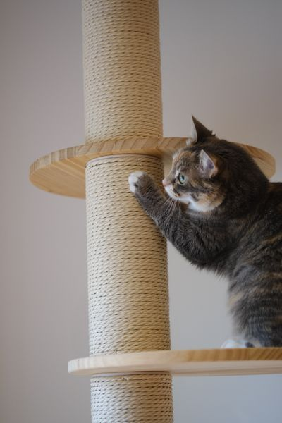

About
As a cat parent, one of the hardest parts about working and being away from home is making sure my cats stay happy and entertained. Cats need mental stimulation like we do, and boredom can lead to stress and unwanted behaviors.
That’s why I created Happy Scratch, a scratching post that senses when your cat starts to scratch and releases a little burst of catnip, turning scratching time into a fun and enriching activity to satisfy their natural instincts.
For cat parents who want an easy way to keep their cats active and content, Happy Scratch fits perfectly into your routine. Your cats get the stimulation they need, and you get peace of mind!
Gallery
Get a closer look at these adorable cats and their enrichment that inspired our cat scratching post.
